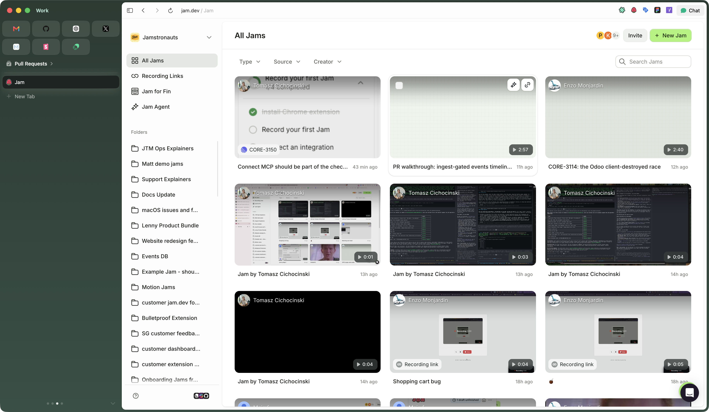
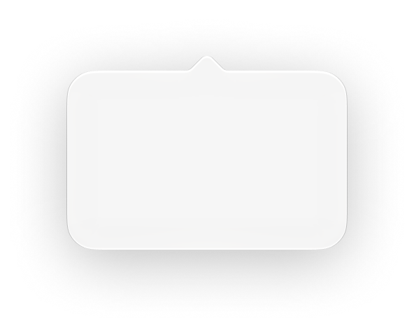

Find Jam in your Menu Bar
Click Jam’s strawberry icon to record, open drafts, or change settings.

00:00

Couldn’t load this video. Choose another file in the playground.

You are offline
You can save this Jam as a draft and upload it after you regain connectivity.